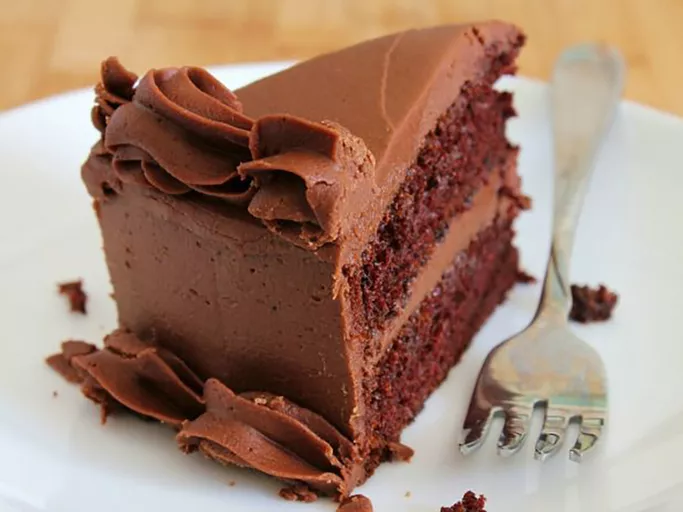

Chocolate Cake

Description
This homemade chocolate cake recipe is super easy to prepare in one bowl for a deliciously moist and fluffy chocolate cake. This is the best chocolate cake I have ever had! Frost with your favorite frosting.
It takes one hour to prepare and serves 24 human adults.
Ingredients
- 2 cups white sugar
- 1.75 cups of all-purpose flour
- 0.75 cup of unsweetened cocoa powder
- 1.5 teaspoons of baking powder
- 1.5 teaspoons of baking soda
- 1 teaspoon of salt
- 2 large eggs
- 1 cup of milk
- 0.5 cup of oil
- 2 teaspoons of vanilla extract
- 1 cup of boiling water
Steps
- Gather all ingredients.
- Preheat the oven to 350 degrees F (175 degrees C). Grease and flour two 9-inch round baking pans.
- Stir sugar, flour, cocoa, baking powder, baking soda, and salt together in a large bowl.
- Add eggs, milk, oil and vanilla; mix for 2 minutes on medium speed with an electric mixer.
- Stir in the boiling water. The batter will be thin.
- Pour evenly into the prepared pans.
- Bake in the preheated oven until a toothpick inserted into the center comes out clean, about 30 to 35 minutes. Cool in the pans for 10 minutes, then transfer to a wire rack to cool completely.